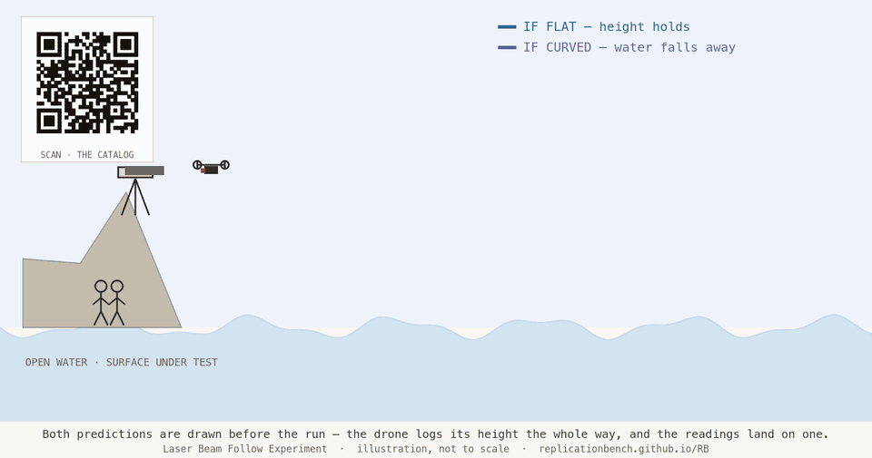

LASER BEAM FOLLOW
EXPERIMENT

A laser is levelled where it stands, on a height above open water, locked on both axes, and never aimed at anything downrange. A drone flies out along that level beam and logs its height above the water the whole way, tens of thousands of readings strung along the run. That dense profile is the measurement, and it is what lifts the test past the older ways: a leveling shot is two points, the classic three-marker figure is three, and this is the whole run, far too dense for any single glitch or staged frame to fake. On flat water the height holds the same the whole way out. On curved water it climbs, by amounts this page works out for every distance, with Polaris, the depression read at the end, and an optional midpoint photograph each checking that climb a different way.
Refraction is the one thing that can imitate the signal, so the protocol measures it on the night rather than assuming it, firing two colors of light that bend by different amounts to hand back the bend as a number. The predicted figures are written down and signed by both sides before the run, the raw readings are published after, and the surface is left to say what it says. It costs from a few hundred dollars to about a thousand, over a stretch of open water, so anyone can check it. Flat is a result. Curved is a result. A run that does not resolve is a result. Neither is the goal.
What this measures
A laser points east and holds still. A drone hangs in the air in front of it, reading nothing but the beam on its sensor. No map. No compass. No heading typed into a flight computer. When the beam drifts up the sensor face, the drone climbs to meet it. When it drifts sideways, the drone slides over. Wherever the light goes, the machine goes.
The experiment does not assume an answer. It records what the surface does beneath a levelled beam of light, and it reports whatever the numbers report. Flat is a result. Curved is a result. A run that does not resolve, where the signal hides in the noise or refraction was never pinned, is a result too, reported as that and not forced to a verdict. Neither is the goal.
What it can show, and what it cannot
This is not the one test that ends an argument. There is no such test. What it is, is a measurement of three quantities that are independent of one another: the angle to Polaris, the drone's height above the water, and the tilt of the laser at its mount. Where a marker can be anchored at the midpoint of the run, it adds a fourth and stronger reading, the midpoint set against the chord between the two ends. Each can come out level, or changing, or somewhere that needs explaining. Read together, across a measured distance, they describe what the surface did. Nothing more, and nothing less.
One run settles nothing on its own. Run it again. On another night, in another season, from another latitude, and the reading either holds or it does not. That is the only test a result has to pass: whether it survives being repeated. The cost of admission runs from a few hundred dollars to about a thousand, over a stretch of open water, which is the point. Anyone can check the work.
And be plain about the size of the claim. One run measures the shape of the water it actually flew over, across that distance, on that night. It is not a weighing of the whole planet, and it does not settle the global shape of anything in a single flight over a single stretch of open water. What it returns is one measured section of surface. Flown again at other distances, other sites, other latitudes and seasons, those sections accumulate, and each repeat refines and extends what the last one found. No single night is asked to carry the whole question. The measurable surface of the water, a stretch at a time, is what the work reveals.
A map is not the world. It is a picture of the world, and every map is built from choices: what to keep, what to leave out, which projection to flatten it through, which names to print. That holds for a hand sketch, and it holds for a satellite mosaic, which is stitched, reprojected, and color-corrected before anyone sees it. No map escapes those choices, and it is fair to distrust any claim that leans on one (Harley, 1989). This protocol leans on none. The drone is told nothing about where the world goes. It follows a beam of light and writes down physical quantities: an angle to a star, a height above the water, the tilt of a mount, the temperature and pressure of the air. A measurement carries assumptions of its own, and the answer to that is not to pretend it does not. It is to name them, and to read instruments that fail in different ways, so no single assumption decides the result. What the protocol asks you to trust is not a chart, and not a picture of the Earth taken by anyone. It is the reading built in front of you. Even the surface it reads against is open water, which settles to its own level and needs no survey, so no terrain map stands between the instrument and the result.
A person walking makes a thousand small choices a second. Where to step. How fast. Whether that faint smear of green is the beam or just a tired eye. Every choice is a place where expectation can steer the outcome. The drone makes one choice and makes it again: keep the beam centered. The flight controller does it mechanically, with no stake in the answer. It cannot hope for one. That is the reason it holds the instrument and not a person.
A measurement is only as strong as the agreement on what it would show. The surest way to make this one hard to wave away is to build it together with the people who expect the opposite result, while no one yet knows the answer. Everything below raises the internal validity of the run. Each step closes a gap where a result could later be explained away.
Before the first run, write the whole plan down and have both sides agree to it: the site, the distance, the instruments, the controls, and the conditions that make a run count as clean. Write down, in the same breath, what a flat reading and a curved reading would each be taken to mean. Only then are the numbers taken. Agreeing on the rules before anyone knows the outcome is what stops the line from moving once the outcome is in.
The sharpest objection is a gift, because it is a control the design did not have yet. Ask the people who expect the water to read flat what would convince them the run was clean, and ask the people who expect it to read curved the same question. Each names the failure it worries about most, refraction, a beam off level, a drone off its line, a float that has settled, and the protocol grows a check for it. A design that has already survived its harshest critic is one that critic cannot disown afterward.
Run it with witnesses from both sides standing at the instruments. Both read the starting angle to Polaris, both watch the altitude log come off the drone, both see the depression angle and the midpoint frame, and both sign the record. A measurement read and signed by people who wanted different things from it is no longer one camp's claim. It is a shared fact, whatever it says.
None of this touches the result. It touches whether the result is believed, which is the harder half. Flat is a result. Curved is a result. Designing it together is how either one comes back as something neither side can take apart after the fact.
The diagram is a side view. The operator stands on a height overlooking open water, a sea cliff or a lakeside bluff, high enough that the beam rides well clear of the surface and the horizon never enters the picture. The drone starts at the elevation of the beam and flies out over the water.
One choice in the setup decides everything that follows: the beam is levelled at the origin and then left alone. It is set against an independent level where the mount stands, the local horizontal, and locked there. It is never aimed at the far end, never pointed at a target to see whether it lands. Level here is the tangent to the water's own surface at the origin, so a flat surface keeps the same gap under the beam the whole way out, while a curved one falls continuously away from it, by an amount that grows with the square of the distance. Because nothing downrange is aimed at, nothing downrange can hide that fall. The drone only rides the beam and reports the gap.
Hold two possibilities side by side, and give each the same weight. If the water beneath the beam is flat, the drone keeps its starting height above the surface the whole way. The beam runs parallel to the water, and the end depression reading comes out at exactly height over distance, nothing extra.
If the surface curves away instead, the water falls below where it began. The drone climbs to stay on the beam, because the water falls away beneath it. The beam is a levelled, locked reference rather than a perfect straight edge: light bends in the air it crosses, so over a long run the beam itself sags gently toward the surface, by a fraction of the curvature set by the refraction on the night. The climb the rangefinder logs is what is left after that sag, the surface dropping away faster than the beam does, and measuring the sag and taking it back out is the work of the refraction section. The beam itself is never touched during the run; at the end, with the drone hovering just above the water at the far point, the operator tilts the laser down to it for one reading, and the encoder records how far below the level line the far water sits. Polaris is the exception. An east run barely changes the drone's latitude, so the clinometer reads close to the same at both ends whether the surface is flat or curved, which makes it a check that the run held its line rather than the thing that tells the two apart. That work is done by the altitude, the tilt, and the midpoint figure. The protocol does not decide between these in advance. It builds the apparatus that can tell them apart, and then it reads the dials.
It is worth saying plainly what could sit in that gap, because a flat surface is not predicted to show nothing. Any reading of the result, level or curved, can call on the air to bend the light, and the argument that distant things sink by perspective, the angular crowding of distance toward the eye, would put its own decline there too. The experiment is built to set both of those aside and read the surface alone. The drone's downward range to the water is a physical distance, not a look along the horizon, so perspective, which is a property of how a scene projects into an angle and not of how far two things sit apart, does not enter it. The three-point photograph is proof against perspective as well, because projecting a scene onto an image keeps straight lines straight, so three level equal heights stay on one line however the perspective runs, and only a surface that lifts the middle one can carry it off the line. That leaves the air, which the protocol measures and takes out, and the fall of the surface itself, present only if the surface curves, growing with the square of the distance. The test is whether the gap holds or grows, and it does not decide in advance which it will be.
Two choices of venue do real work. The first is height. A sea cliff or bluff of even modest rise, 50 to 200 metres, keeps obstructions out of the beam and lifts it above the boundary layer near the surface, where the temperature gradient and the bending it causes are strongest (Young, n.d.). It also gives the equipment a platform that will not shift during the run.
The second is water. The surface the drone measures against has to be level, or its own rise and fall reads as a curve that is not there. Land has topography, and to take that back out you would need a survey of the ground beneath the whole path, which is a map by another name. Calm water needs no survey. It settles to an equipotential surface, the very surface whose shape is in question, so the height above it is a clean reading. Where no water is reachable, a large dry lakebed is the only good substitute, flat and level for the same reason. Fire from the height, out over the water.
Calm at the start is not the same as steady through the run, and the one surface the whole measurement leans on deserves a witness of its own. Over the hours a run takes, a tide can shift the far water against the near, and wind can pile the surface into a slope or set a lake rocking in a seiche, each of which leans the water the way a curve would and reads straight into the drop. So an anchored logger at the origin and another at the far end record the water level the whole time, and a reading that stays calm and level at both ends is what lets the surface be trusted as the reference rather than assumed at the start. The gauge is a pressure sensor resting on the bottom, the depth of water over a fixed point, not a satellite buoy, because a GNSS height is read in the very frame the run is testing and would settle nothing. It checks the water, which the beam rides far above, not the beam itself.
Firing the beam east points the run square across the north-south line, so the run carries no deliberate change of latitude of its own. On an east run the latitude barely shifts either way, so the Polaris angle should hold steady, and a swing in it points to the drone wandering off its line rather than to the surface. Point the beam north or south instead and a latitude change rides straight into the path before the surface has said anything, tangling the variables together. East and west keep that reading clean. East over west is arbitrary. West would do the same job.
A side view of the operator's station on the bluff above the water. The laser sets the line. Every other instrument either logs what the laser and the air did, or fixes the latitude the run started from.
The instrument the whole rig answers to. It fires east and holds its line, and the drone follows the light, not a heading. A compass points the first shot east, then comes off the mount. From there nothing about the path comes from a map or a compass.
Both axes are clamped dead still for the run, so the beam cannot wander in any direction and stays a fixed, independent reference. The vertical axis is released once, at the end, to tilt down to the drone hovering at the far water for a single depression reading. The encoder records that angle, and it is Measurement 3.
A leveled, rigid base. A beam that drifts only because its platform sagged is noise you cannot take back out later, so the station is leveled once and left untouched for the run.
Temperature, humidity, and pressure, read at the height the beam leaves the mount. This is the origin half of the pair carried on the drone; together they fix the refractivity of the air the beam crosses, fixed here and traced along the path by the drone.
A small logger with a microSD card timestamps the mount's weather and the encoder's tilt, so the origin record lines up against the drone's second for second once the run is over.
Set apart from the laser, a clinometer reads the angle from the horizon up to Polaris, which sits within about two thirds of a degree of the celestial north pole (Bowditch, 2019). That angle is Measurement 1, taken at the start and again at the end.
A second beam in red, run beside the green, measures refraction directly. The two colors bend by different amounts, and the gap between where they land is the size of the bending.
A side view, the drone flying east with the beam arriving from the west. Every instrument on it points at a single thing, and none of them points at a map.
The sensor faces back along the beam, toward the origin in the west. Four photodiodes around a center aperture read the light; when all four match, the beam is centered, and keeping them matched is the flight controller's whole job. Mounting it at the rear keeps it square to the incoming beam through the run.
The four cells split into two pairs, one for each axis the drone has to hold. Top against bottom reads the beam riding high or low, which is height. Left against right reads it off to one side, which is north or south, because the beam runs east and the sensor faces square back down it. Matching the top-and-bottom pair holds the height, matching the left-and-right pair holds the line, and the beam counts as centered only when both pairs agree at once.
The point where all four match is the center of the beam's spot, and for a symmetric beam that center rides on the beam's own axis however wide the spot has spread. Balancing the quadrants therefore finds the axis to a small fraction of the spot, not to its width, which is how a beam metres across at range is still followed to centimetres. That holds only while the beam stays symmetric, so the spot is checked for shape before the run, because a lopsided beam would pull its center off the axis.
Beside the sensor, a retroreflector sends part of the beam straight back to the origin. That return is what the operator sights at the end of the run for the depression reading, Measurement 3, and it lets a reciprocal refraction check work from the origin end.
Both look straight down. The laser rangefinder reads the height to the water, which is Measurement 2 and the reading that matters. The optical-flow camera counts distance from the surface texture sliding past, though calm water gives it little to track; on a glassy night the distance is carried instead by markers set at measured ranges. Neither asks anything of a satellite.
Temperature, humidity, and pressure ride on a short mast above the body, up out of the rotor wash where the air is still the air the beam crossed. Those readings fix the refractivity at the drone's end, and sampled at two heights, the vertical gradient that bends the light.
The flight controller sits in the center, wired to one input only: the beam sensor. No compass, no satellite receiver, no stored heading. The battery sits beside it. Everything the machine knows about where to go, it learns from the light on the sensor.
The measurement this protocol leans on is not two points, and not three. It is the whole run. The drone's downward rangefinder logs its height above the water the entire way out, tens of readings a second across a flight of minutes, so a single pass is tens of thousands of points strung along the path. A leveling shot between two marks is two points. The classic figure that older work relied on, described below, is three. This is a dense record, and that changes what can be said about it.
A single reading can be a glitch, and a single photograph can be staged, but a record built from tens of thousands of points can be neither. Every drift and wobble shows in it. The shape is fit through all of it at once, and what comes out carries an error rather than a claim. Two points can be joined by any line, which is why a result resting on a laser at one end and a target at the other asks you to trust both ends and the single straight guess between them. Tens of thousands of points cannot be joined by just any line: they either hold a constant height above the level beam the whole way, which is the flat result, or they bend from it as the square of the distance, which is the curved result, and no third shape fits a clean run. There are far more readings than the handful of numbers either a flat line or a parabola needs, so the surface is forced to show its hand. That is the opposite of assuming it. The figure above draws both predictions as dashed lines because the run has not happened yet, and the readings are what land on one of them. Flat is a result. Curved is a result.
The objections that have always dogged a three-point figure are about refraction and perspective, and the dense run is built to take each one off the table rather than argue it away. Take refraction first. The three-point figure handles the ordinary kind well, because a bend that grows evenly with distance shifts three spaced markers in proportion and leaves them on a line. But that holds only while the air stays uniform, and it is earned by running on a settled night and trusting it to stay settled. The dense run does not have to assume uniform air. The drone carries temperature, humidity, and pressure for the length of the flight, samples the vertical gradient that does the bending, and fires two colors that bend by different amounts, so the bend is measured as a number along the path the beam actually crossed and then subtracted from the logged climb. Refraction is not waved away here; it is the thing the run goes out to measure, which is a stronger place to stand than waiting for a night when it can be ignored.
Perspective is the other standing objection, the claim that distant things sink by the angular crowding of distance and that any apparent drop is that rather than the surface falling away. Perspective lives in a sightline, in angles narrowing toward the eye, so it bites a three-point photograph the way it bites any look across the water. The run reads no sightline to the far water. The drone's rangefinder measures straight down, the physical distance between the aircraft and the water beneath it, and a vertical distance is not a perspective: there is no horizon in the number and nothing receding into it. Whatever perspective does to how the scene looks, it does not change how far the water sits below the drone.
And a three-point figure has to be built before it can be read. It needs a float anchored at the midpoint at exactly the laser's height, held against wind and current, and a clean single frame of all three marks, which a canal or a sheltered lake allows but the open ocean does not. The run carries its reference with it. The water under the drone is the surface under test at every point along the path, so the measurement reaches wherever the aircraft can fly, open water included, with no marker to anchor and no chord to sight. That is the case where the older figure cannot be set at all, and it is exactly the water where the question is argued hardest.
Where a marker can be anchored at the midpoint, the oldest version of this measurement can run alongside the profile, and it is worth doing because it is a different kind of evidence. The dense profile is a time series, built reading by reading as the drone flies, so it rests on the rangefinder behaving the same from the first sample to the last. Three fixed marks at equal height, photographed in one frame from the origin, are a single figure caught in one instant, immune to anything drifting over the run. On a flat surface the three equal heights fall on one straight line, so the middle mark sits on the chord between the outer two; on a curved surface the water stands higher in the middle than along that chord, so the middle mark rides above it. It is a corroboration, not the measurement. Where the geometry cannot be set, far out on open water most of all, the run stands on the profile without it.
This is an old measurement. Alfred Russel Wallace set it up on the Old Bedford Canal in 1870, sighting between two marks at equal height six miles apart with a third at the midpoint, and recorded the midpoint mark standing above the line of the other two (Wallace, 1908). Henry Oldham repeated the demonstration for the British Association in 1901 and reported the same figure (Oldham, 1901). More recently the photographer known as Soundly has documented the same geometry across Lake Pontchartrain, where a line of equal-height transmission towers shows the middle towers riding above the chord, imagery examined in detail in a long public thread (West, 2017). The three-point figure is what each of these records in common. The protocol here is a way to produce it on demand, with markers you control and heights you set.
Refraction is the standard objection to any curvature measurement, so it is worth saying exactly what it can and cannot do to this figure. Ordinary refraction bends light toward the denser air near the water, and the shift it adds to apparent height grows in step with distance along the path. A shift that grows evenly with distance moves three equally spaced markers by amounts in the same proportion, which keeps them on a straight line. So a uniform atmosphere, the normal case, cannot lift the midpoint off the chord. It leaves a flat surface reading flat. The curvature signature is different in kind. The rise of the midpoint grows with the square of the run length, not in step with it, which is why no even gradient can imitate it. To push the midpoint above the chord over genuinely flat water, light would have to bend the other way, upward and away from the surface, which is the hot-surface mirage regime, and it brings its own shimmer and inversion that are plain to see. Running on settled nights, across more than one night, with two colors and logged temperature and pressure, is what bounds that case. Normal refraction does not manufacture the signature. It only shrinks a real one.
The marker is a small anchored mast on a float, carrying a retroreflector at the same height above the water as the laser at the origin and the beam sensor on the drone. Equal heights are the whole point, so set them against the same tape, not by eye. Fix the float at the geometric midpoint of the run, half the straight-line distance between the origin and the far end. A handheld GPS will place it closely enough, and because the midpoint only has to sit near the middle, nothing in the result rests on that fix. Anchor it so it holds station against wind and current, and check its height again at the end of the run, because a float that has settled or ridden up has changed the one number that matters.
- Point clinometer at Polaris.
- Both witness the same reading.
- Record angle above horizon.
- ALPHA = ____ degrees
- Mount laser on bluff.
- Level the beam, then lock both axes.
- Beam stays fixed all run.
- Beam is the only authority.
- Drone corrects to beam only.
- No compass. No heading. No map.
- Log altitude continuously.
- Stop at agreed distance.
- Polaris angle at end position.
- Final drone altitude.
- End depression angle.
- BETA = ____ degrees
Operator and drone start at the same spot on the bluff. One Polaris reading is taken with both parties standing there to witness it. That removes any argument about the baseline later, because no one is taking the starting number on faith. Polaris sits within about two thirds of a degree of the celestial north pole, and its height above the horizon runs close to the observer's latitude (Bowditch, 2019). Because of that offset the star traces a small circle around the pole through the night, wider than the clinometer can resolve, so note the clock time of this reading; the end reading is compared at a noted time too, with a standard Polaris correction table closing the gap between them (Bowditch, 2019). That is the baseline the end reading is checked against.
The beam is levelled with the leveling head, the encoder is zeroed against that level line, and then both axes are locked. Locked mechanically, with clamps, not locked by a promise to be careful. Nothing about the beam changes for the rest of the run, because the moment a beam is re-aimed at its target it stops measuring the surface and starts measuring the operator. The vertical axis is opened again exactly once, at the end, for the depression reading.
A compass points the first shot east. That is the only thing the compass does. Once the beam is set and the axis is clamped, the compass comes off the mount. From there on, the beam is the path. Not the compass. Not a map. Not a model of what the path should be.
The flight controller is wired to one input: the quadrant sensor. No waypoints. No satellite guidance. No heading to hold. The single instruction is to keep the beam in the center of the sensor. Beam rides up, the drone climbs. Beam slides left, the drone goes left. Where the drone ends up, in height and in line, is set entirely by where the light goes.
The optical-flow module logs the distance actually traveled, not a straight-line guess. If the path bends, the odometer counts the length of the bend.
Settle the stopping distance before the run. The reach is set by the laser, the night, and the beam's spread. A 200 mW beam stays visible to roughly 20 to 30 miles on clear, dry air, and falls to 5 to 10 miles when it is hazy or humid. Tracking is the tighter bound: even expanded, the spot is metres wide past 10 miles, and the quadrant sensor's centering signal fades as the spot grows around it. The beam-follow is solid to roughly 5 to 10 miles and degrades beyond, and that bound, more than the laser's brightness, is what sets the practical long-run distance.
The drone reaches the agreed distance and descends to hover just above the water, its lidar reading that hover height. The operator releases the vertical axis, tilts the laser down until the drone's retroreflector lights, and the encoder records the depression angle below the level line. That single angle is Measurement 3. The chase crew takes a fresh Polaris reading, same clinometer, same method as Step 01, with the clock time noted. Then the drone lands and the altitude log comes off it.
Those three end values, set beside their three starting values, are the whole output. Everything after this is comparison.
An instrument you have not checked is an opinion. Before any reading over open water is allowed to mean anything, the rig has to earn it on ground where the answer is already known, and the parts that could be told to find a result have to be open to inspection. None of this decides flat or curved. It decides whether the number is trustworthy enough to be worth arguing about at all.
Fly the whole protocol over a surface already known to be flat and level, and confirm it reads flat. A surveyed dry lakebed, a frozen lake with benchmarks, a long airport apron, or a stretch of still water short enough that any drop sits below the noise will all serve. The kit should return a level altitude profile, a depression of exactly height over distance, and a midpoint on the chord. If it shows a climb where there is no curvature, something in the rig is manufacturing one, and that has to be found and fixed before a real run is worth flying. This is the null control, and it cuts both ways: a level advocate gets to watch the apparatus fail to invent a curve, and a curve advocate gets to watch it read true on known-flat ground. The positive control is the same idea inverted, a known drop set up on purpose, a target lowered by a measured amount, to confirm the rig sees a real one at the right size and does not swallow it.
The whole curved signal is the downward lidar, so its honesty is checked, not assumed. Before the flight and again after it, read it against a distance set by tape, both sides watching, and write down any offset. Do the same for the rest: the tilt encoder is zeroed against the levelled beam with both parties present, the clinometer is read against a known angle, and the two weather chips are compared side by side so their offset is known before one is moved between heights. The level the beam is set against is checked the same way, by reversal: read the inclinometer, rotate it 180° and read again, and its own zero error shows as the half-difference, taken out rather than trusted. Calibrating before and after, not just once, is what catches an instrument that drifted during the run, which is the failure no single mid-run reading can reveal on its own.
The strongest claim on this page is that the drone has no stake in the answer, that it only keeps four photodiodes equal and climbs because the light told it to. That claim is only as good as the code on the flight controller, and a black box asked to be trusted is exactly what this protocol refuses everywhere else. So the firmware is open and published, the control loop is the plain one described here with no altitude schedule and no waypoint buried in it, and either side can read it, build it, and load it themselves. A drone that climbed on a known-flat surface would be caught by the control above; open code is how anyone confirms why it climbed on the water, line by line, instead of taking the build on faith.
The curvature signal grows as the square of the distance, so an error in distance costs as much as an error in height, and the distance cannot quietly come from the satellite system the run is meant to stand apart from. The optical-flow odometer counts the surface sliding past, and on glassy water, where it has little to track, anchored markers at ranges measured beforehand carry it instead. Those ranges are fixed by tape, by a laser rangefinder shot between the markers, or by a pre-survey both sides accept, and each sample's distance source, flow or marker, is logged beside it. State the distance error the way the height error is stated, because a profile is only as square as the axis it is plotted against. And give the two records a common clock, a sync pulse sent once over the telemetry link or a shared mark at lift-off, so the origin log and the drone log line up second for second without leaning on satellite time. The cleanest distance of all, though, is the one you do not have to agree on: hold a steady speed and plot height against that common clock, and a single short, tape-measured speed-gate near shore is all that scales the time into a distance, so the run's disputed length never becomes the thing the verdict rests on (see the altitude section).
This is the whole parts list, the reference build and the menu of alternatives in one place. None of it is sacred: the run needs each spec met, not each part bought new. Tap any part to open its options, from "you may already own it" through "readily obtainable" to "best in class." A run that meets the spec on borrowed gear is worth exactly as much as one bought to order; where a cheaper choice costs you something — reach, precision, a night of fiddling — the notes say so.
Plus the small stuff every field day needs: walkie-talkies for the crew, batteries, cable ties, and a notebook ($55–110 all in).
Laser prices were checked against the Zeus Lasers and Wicked Lasers consumer catalogs (June 2026). Drone parts were priced from common F450 kit suppliers. Sensor, mount, and weather-module prices came from AliExpress, eBay surveying listings, and Banggood industrial pages. Each link points to one representative supplier, not an endorsement. The range runs from the cheapest gear that still does the job to mid-tier prosumer; spending past that buys precision and reliability, not a different answer.
The run does not have to be long. A long reach asks for a powerful laser, a wide body of water, and a flight that holds the beam for tens of miles, and not everyone can field that. The measurement does not need any of it. The drone logs its height above the water the whole way out, hundreds to thousands of readings across a three to five mile run, and the climb a curved surface would trace grows with the square of the distance, so even a short run leaves a signal a modest kit can resolve.
What separates a short run from a long one is not a distance fixed in advance but everything the reach asks of the kit. The short run asks the least of it: a small battery, a modest drone kept within sight, a weaker laser, and the simplest regulatory path, a recreational registration and the line-of-sight rule. The long run pushes every one of those up at once, a larger battery or legs staged along the way, a more efficient airframe to spend that battery reaching out rather than hovering, a stronger laser to stay readable at range, a chase boat, and the heavier paperwork that flying beyond sight demands. Reach is bought in battery, drone, laser, and permission together, which is why the three to five mile run is the protocol's primary form and the long one its expedition version. Naming the run by its flight time rather than by a mileage is also the honest way around the distance problem, because the clock is the one axis both sides read the same, and height plotted against it already shows the flat-or-curved shape, as the altitude section sets out.
At three miles the water falls about six feet below the level beam, and the drone climbs that much to stay on it; at five miles it is about seventeen. Those are not subtle amounts for a downward lidar reading to a tenth of a metre, logged at every point along the path rather than guessed from the two ends. A fifty to one hundred milliwatt green laser reaches these distances at night, which moves the laser from the most expensive line on the list to one of the cheapest.
A short run also keeps the whole path in more even air. The worst refraction lives in long, low, grazing sight lines that cross miles of changing boundary layer. A few miles of elevated beam over settled water is the easier case to control, not the harder one. The limit is at the short end. At two miles the climb is under three feet, and under a mile less than one, where it starts to contend with the wobble of the waves and the drift of the air across the run. Three to five miles is the range where the profile is both easy to read and easy to defend.
Where a marker can be anchored, a midpoint float adds an optional second kind of evidence on top of the profile: three equal heights photographed in one frame, the middle one standing above the chord by about a foot and a half at three miles and about four feet at five, a single instant that cannot drift the way a flown series can. It is a corroboration, not the measurement. The run stands on the profile without it, and a plain camera on a fixed marker is also the cheapest way in for anyone who cannot yet field a drone.
The aircraft and the airspace are where that scaling bites hardest, and both push the same way. Take the aircraft first: reach is battery, because flight time is distance, plus the efficiency to spend that battery going out rather than staying up, plus a control link that still holds at the far point, so a smaller, cheaper drone simply reaches less far. Then airspace. In the United States the recreational rules ask the aircraft to stay within visual line of sight, so a short run flown where the crew can watch it needs only an inexpensive drone, registration, and the recreational knowledge test. Carry the run out past easy sight and it wants a visual observer keeping eyes on the aircraft, one more job for the chase boat, or a Part 107 certificate with a line-of-sight waiver, on top of the more capable airframe the distance already demanded. The marker-only build flies nothing, so it never meets any of this, which is the other half of why it is the cheap way in.
The long run is the aspirational form, and it carries logistics the budget lines do not: a DIY quad flies fifteen to twenty five minutes on a battery, which is five to eight miles at beam-follow speed, so anything past that means battery legs staged at marker buoys and a chase boat to serve as the landing platform, the battery relay, the far-end reading station, and the eyes that keep the aircraft within sight. The lidar's ceiling binds too, since the drone rides higher above the water as the climb accumulates. None of that is a reason not to attempt it. It is a reason to treat the three to five mile run as the protocol's primary form and the long run as the expedition version, planned like one.
INDEPENDENT MEASUREMENTS — COMPARE ALL
Any one instrument can lie. A clinometer can be miscalibrated. A rangefinder can carry a software bias. An encoder can slip a tooth. One number, on its own, is hard to trust and easy to argue with.
So log more than one. The height above the water, the depression angle read back from the mount, and where a midpoint marker can be anchored, the midpoint against the chord, each carry the curvature if it is there, and they carry it the same way. The angle to a star sits alongside them as a control, holding steady on an east run to confirm the drone kept its line. Readings from unrelated principles, so if one wanders off from the rest, the suspect is that instrument or that step, not the world. The experiment checks itself.
Polaris sits within about two thirds of a degree of the celestial north pole, and its height above the horizon tracks the observer's latitude (Bowditch, 2019). A change in that angle from start to end is a change in latitude, a step north or south across the surface.
On an east run that step is small. The run is aimed across the north-south line, so the drone barely changes latitude, and even over a curved surface the far end drifts only slightly toward the equator, far under a tenth of a degree at the distances here, below what the clinometer can read. So at this scale Polaris is not the sharp test of curvature. It is a control. It confirms the run held its heading and the drone did not wander north or south, the kind of wander that would otherwise leak into the altitude and the tilt. The curvature itself shows up in those, and in the midpoint figure. Only over much greater distances would the southward drift grow into a reading of its own.
It also comes with a caveat worth stating plainly: people who hold different models of the sky read a star's angle differently. So no weight rests on Polaris alone. It rests on whether it agrees with the rest.
This is the plainest of the running instruments. The drone follows a levelled, locked beam. That beam is nearly straight but not perfectly so: light bends a little in the air it crosses, and over the run it sags toward the surface by a small amount the refraction section measures and removes. If the water stays the same distance below the beam for the whole flight, the surface is flat across that span. If the water falls away from the beam by more than that sag, the surface is curving across it. The reading does not depend on which way the result comes out. It only reports the distance.
No star to interpret. No claim about how light travels through space. A rangefinder pointed down, logging the height to the water, second after second, for the length of the flight.
Each altitude sample is logged with the centering offset beside it, and that offset is two numbers, not one: the vertical miss and the lateral miss read from the four quadrant photodiodes, how far off the sensor center the beam sat up or down and to the north or south. So every point in the file is tagged on-center or off-center against a tolerance fixed before the run, and on-center means inside the tolerance on both axes at once. The drone advances along the run only while it reads on-center, and only on-center samples feed the result, while the off-center ones stay in the file, flagged, so nothing is quietly dropped. The vertical miss is the one that bears on height: a beam riding high on the sensor before the drone has climbed to meet it would otherwise log as the drone's own height after a gust, not the height of the beam. The lateral miss matters too, because a drone drifting north or south has wandered off the beam line and changed its latitude, which is exactly the heading wander Polaris is there to catch. Recording both beside the altitude is what keeps an off-center point from passing as a clean reading.
Because the rangefinder logs the whole flight, the run is not two numbers but a profile. Pair each height with the distance the optical-flow odometer counted at the same timestamp, and the height above the water is plotted along the entire path, not only at the start and the end. On a flat surface that plot is a level line, the drone holding the same height the whole way out. On a sphere it is a parabola, the height growing with the square of the distance, and the curvature of that parabola is the reading: its coefficient is one over twice the effective radius, so the shape of the logged profile gives the effective radius directly, refraction folded in, with the two-color and gradient measurements separating the bending from the geometry. Fitting a shape through hundreds or thousands of on-center points is a stronger measurement than differencing two, and it shows at a glance any stretch where the drone wandered or the air did something the rest of the run did not.
And the run need not end at the far point. Flying the drone back along the same locked beam logs the whole profile a second time, in reverse, on the same night and through the same air, which turns one flight into a repeat. The two passes should lie on top of each other. Where they do, the reading has shown it can be made twice in a row; where they part, something moved between them, the beam, the water level, an instrument, or the bending of the air, and the size of the gap between the legs measures how much. A steady geometric drop reads the same going out and coming back, while a refraction that drifts across the ten to thirty minutes of a run leaves the two legs disagreeing, so the return is one more way the curvature is told apart from the air. It is a consistency check, not the reciprocal cancellation that needs both ends sighting at once, and it costs only battery: flying out and back roughly halves the distance a charge reaches, which suits the three to five mile run more than the long one.
The profile has one soft spot, and it is the distance axis. The climb grows as the square of the distance, so the radius read out of it is only as firm as the distance it is plotted against, and distance over open water is the hardest number to agree on: optical flow has little to grip on glass, surveyed markers ask for a survey, and a satellite fix is read in the very frame the run is testing. Time has none of those troubles. A clock owes nothing to a network or a surface, and both sides read the same seconds.
Fly at a held, steady speed and distance is simply speed times time, so the height plotted against the clock carries the same law as the height plotted against distance. A flat surface holds a level trace. A curved one climbs as the square of the time, the climb across the second half of the flight far larger than across the first, and doubling the flight time quadruples it. That doubling is a test of the squared-distance law that never has to know the distance at all, and the sign of the bend in the height-time trace already sorts the cases: a trace curving up is the surface falling away, a level trace is flat water bending the light little, and a trace curving down is flat water with the beam sagging under refraction. None of that reading needs a distance.
What distance still buys, or rather speed, is only the number on the radius. To turn the time-squared coefficient into an effective radius you need the speed that scales time into distance, and that is pinned without surveying the whole run: one short baseline near shore, two markers a tape-measured distance apart with both sides watching, the drone timed as it passes each. Hold that speed for the run, and the long, disputed mileage is replaced by one short distance anyone can check by hand. Two checks guard the held speed: flying out and back cancels any wind along the track, and flying the run again at a different speed should scale the coefficient as the square of the speed, or something moved that should not have. So the verdict, flat or curved, rides on the clock and the lidar, the two readings no one disputes, and only the size of the radius leans on a baseline short enough to measure with a tape.
Measurement 3 is Measurement 2 read from the other end of the beam. The beam itself is never moved during the run. At the end, the drone descends to hover just above the far water, the operator releases the vertical axis and tilts down until the retroreflector lights, and the encoder records one number: the depression angle from the level line down to the drone. On a flat surface that angle is simply the mount's height over the distance, the angle any level line makes down to a point near the surface far away. On a curved surface the far water has also dropped below the level line, and the depression comes out steeper than height over distance by that extra amount.
Because it watches the same thing from the other side, it is a cross-check on the second reading. The extra depression, multiplied by the distance, says how far the far water sits below the level line, and that should match the climb the altitude log recorded. If the lidar says the drone climbed 600 feet and the depression angle accounts for 100, one of the two instruments is wrong, and the run waits until you find out which.
Where a midpoint marker can be anchored, it adds an optional second kind of evidence beside the profile, one figure read in a single instant rather than a series built up over a run, so nothing in it can drift over time. It is a corroboration rather than the measurement, but a strong one wherever the geometry can be set. Three markers at equal height, origin, midpoint, and far end, photographed together from the origin. On flat water the midpoint marker falls on the line joining the other two. On curved water it rides above that line, by an amount that grows with the square of the run length. Alfred Russel Wallace recorded it in 1870, Henry Oldham repeated it in 1901, and it is the same figure visible across Lake Pontchartrain (Wallace, 1908; Oldham, 1901; West, 2017).
It does not lean on the drone holding altitude or the encoder holding zero. It is read straight off the image. That is why it sits beside the others rather than replacing them. When the geometric figure, the altitude, and the tilt all point the same way, and Polaris confirms the run held its line, there is little left for a single fault to hide in.
Direction is not enough. To judge whether an observed reading is signal or noise, you need the size a sphere of radius 6,371 km predicts at your distance, and the flat prediction beside it. The flat prediction is zero for every row: no climb, no midpoint rise, and a depression of exactly height over distance with nothing extra.
| RUN | DRONE CLIMB d²/2R | MIDPOINT RISE d²/8R | EXTRA DEPRESSION d/2R |
| 3 miles | 6 ft | 1.5 ft | 0.022° |
| 5 miles | 17 ft | 4.2 ft | 0.036° |
| 10 miles | 67 ft | 17 ft | 0.072° |
| 20 miles | 267 ft | 67 ft | 0.145° |
| 30 miles | 600 ft | 150 ft | 0.217° |
These three sphere columns are written in their small-angle forms — the drop d²/2R, the midpoint rise d²/8R, and the extra depression d/2R — which are the leading terms of the exact expressions: the drop is really R(1 − cos θ) with θ = d/R, and the depression is an arctangent. The squared forms carry no trigonometry because the trigonometry has been series-expanded out of them, and over the distances in this table they track the exact geometry to better than a part in a thousand, well inside what the instruments resolve. The page quotes the short forms for readability; a rigorous fit, or the simulator, can use the cosine and arctangent directly.
Refraction moves these figures both ways, which is why the table is read against the bend measured on the night and not on its own: ordinary air shrinks the spherical drop by roughly 13 to 17 percent, a strong inversion or duct can shrink it further or erase it, and a hot-surface mirage can enlarge it. Add the measured bend back in, and a curved surface returns to the table value while a flat one returns to zero. Write down both predictions for your distance before the run, then compare what the instruments returned.
Each instrument earns its row by resolving the signal at the chosen distance. The lidar is comfortable everywhere: a tenth of a metre of noise against a predicted climb of 1.8 metres at 3 miles and 183 at 30. The tilt encoder is the tight one: the extra depression is 0.022 degrees at 3 miles, so the readout needs 0.01 degree resolution and backlash below that, and the depression reading is strongest from 5 miles out. The clinometer's 0.1 degrees cannot see curvature at any distance here, which is why Polaris serves as a heading control and nothing more. The weather chips read absolute temperature only to about half a degree, so for the vertical gradient use one sensor moved between the two heights, letting the offset cancel, rather than two chips compared. And the midpoint float wobbles on the order of inches against a rise of 1.5 feet at 3 miles, which is why its height is taped, anchored, and checked again at the end. Wave height adds to the lidar's own noise, a few centimetres on calm water and more in chop, which is another reason the short end of the range is bounded and calm water is chosen.
Take the outcomes at face value, without deciding ahead of time which one you hope to see. A flat reading is the altitude holding level and the tilt staying at zero across the run, with the midpoint, if one is set, sitting on the chord. A curved reading is the altitude climbing and the tilt rising in the direction a sphere would produce, with the midpoint riding above the chord. Polaris should hold steady through either, because the run is east and west, so a Polaris that swings is the drone wandering north or south, a heading problem to fix rather than a result to keep. The genuinely surprising case is the water rising toward the beam rather than falling away, a pattern neither a level nor a curved surface predicts, which points back at the setup, not outward at a conclusion.
The result that matters is agreement. When the readings line up, you have a measurement worth reporting, whatever it says. When they disagree, the run is telling you something was off, and the answer is to fix it and run again, not to pick the number you liked best.
A third outcome stands beside the other two, because insisting a run must land on one of them is its own bias. A result is inconclusive when the readings do not cleanly match either prediction: when the climb at a short distance sits inside the instrument's noise, when refraction was never measured and the bend cannot be taken back out, when the air shifted enough through the run that no single shape fits, or when the cross-checks point different ways. That is not a wasted night. It is an honest answer, that this run did not resolve the question, and the move is to say so, write down why, change what caused it, and run again. A single measurement can sit comfortably with more than one picture of the world, which is the whole reason the weight rests on agreement across instruments and across nights rather than on one reading pushed to a conclusion. Flat is a result. Curved is a result. Inconclusive is a result. Running again is how the first two are told apart from the third.
| At this distance | FLAT PLANE | SPHERE R=6,371 km |
| Drone height above water (M2) | - | - |
| Climb from the start | - | - |
| End depression to far water (M3) | - | - |
This is the protocol drawn live, and it decides nothing. The mount sits on the left at the height you set, the beam runs level to the right, and the water is drawn two ways at once: a dashed line for the flat-plane prediction, where the water stays parallel to the beam, and a curve for the sphere, where it falls away as the square of the distance. Neither is asserted. The run is what would tell them apart. The shaded band beneath the dashed line marks where the flat model puts the surface, and the refraction toggle lets that flat line carry the beam's own sag, so the flat-with-refraction baseline and the sphere curve can be read side by side, with the gap between them the curvature alone.
Drag the drone out and watch the gap between the beam and the curved water open up. That gap is the height the lidar would log, Measurement 2, and the table reads it for both models at the distance you set. The faint line dropping to the far water is Measurement 3, the depression angle read back at the mount: on the flat plane it is just the mount height over the distance, and on the sphere the far water has sunk below the level line, so the angle comes out steeper. Turn on the midpoint marker for the three-point figure, three equal-height marks and the chord between the outer two, with the middle one riding above the chord by an amount that grows as the square of the run.
The height vs time toggle re-plots that same run against a clock instead of a distance, at the drone speed you set. Flat water draws a level trace; a curved surface draws a climb that grows as the square of the time, so the climb across the second half of the flight is far larger than across the first, and doubling the flight time quadruples it. It is the same squared law the profile carries, shown on the one axis nobody disputes, with only the speed needed to turn the minutes back into a distance, as the altitude section sets out.
The green band hugging the water is the altimeter's reach, the range the downward lidar can actually read, set by the altimeter slider. That gap, Measurement 2, only gets logged while the drone stays inside the band. It is the height above the water, the mount height plus whatever the surface has dropped, that the sensor must cover, so two things can push the drone out of range: a mount taller than the altimeter can see at all, or a run long enough that the surface falls away by more than the headroom left above the mount. When the drone leaves the band the reading is lost and the figure turns red, which sets a real ceiling on how high to mount and how far to fly with a given sensor. It is also the height-against-refraction trade in plain sight: a taller mount lifts the beam out of the worst near-surface bending but demands a longer-range altimeter to keep logging.
The vertical scale is exaggerated, because at true scale the climb is a few feet across miles of water and the line would look flat. The exaggeration is only in the drawing. Every figure in the table is the real predicted value, and the k slider sets the refraction through the effective radius. There is no single standard value near the surface, which is the whole reason the experiment measures k rather than assuming it. Slide it and watch what refraction can do: ordinary positive values shrink the sphere's drop, a strong inversion near k equal to one erases it so the beam runs parallel to the surface, a hot-surface mirage at negative k exaggerates it, and a ducting layer above one flips it, looming the far water up above the level line. A measured field near minus four to plus sixteen, the range Hirt and colleagues recorded a metre or two above the ground, covers every one of these. The simulation shows what each model says the instruments should read. The night decides which one they do.
Atmospheric refraction is the strongest objection to this experiment, and it deserves a direct answer rather than a dismissal. Light bends as it crosses air of changing density, and that bending can imitate the signal the experiment is after, or cover it up. The honest goal is not to wave the problem away. It is to bound it, measure it, and show that what is left over is small.
Refraction follows the temperature gradient, the humidity, and the pressure, and those shift from night to night (Hirt et al., 2010). So run on nights that differ. If a cold dry winter run and a warm humid summer run land on the same altitude gain within a small margin, refraction is not the thing driving the number. If the readings swing with the weather, refraction is doing real work, and the signal is not yet trustworthy.
Refraction can be measured, not just feared. Fire a second laser between two fixed points of known height and distance, in the same air, on the same night. Surveyors do a version of this with reciprocal leveling: two instruments sight each other at the same moment from known positions, and whatever remains after the known geometry is removed is the bending (Hirt et al., 2010). Log that coefficient during the run and take it back out of the altitude reading.
The temperature, humidity, and pressure sensors measure the cause of refraction directly. One sits at the origin. The other rides the drone, so as the drone flies it traces the air the beam crosses for the whole length of the run, not only at the two ends. The bending of the beam is set by how refractivity changes along the path and, most of all, with height (Hirt et al., 2010). Convert each reading to N and you have the air the light passed through, point by point. Better still, let the drone hold station and sample at two heights a few metres apart: the change in N over that height is the vertical gradient, and the vertical gradient is what curves the beam. Denser still, where the rig allows it, is a fixed column of small thermometers up the first few metres at the origin, each step mapping the gradient in finer detail than two points can, the way long-range survey work pins down the bending it has to take out (Friedli et al., 2019). Measured that way, the refraction for the moment is a reading rather than a guess, and it drops straight into the correction beside the two-color and reciprocal checks.
Refraction depends on color. Red light bends less than blue through the same air (Young, n.d.). Fly a red beam and a green beam to the same drone at once. If refraction is present, the two will not agree, in their tilt or in where they fall, and the size of the disagreement is the size of the refraction. If they sit on top of each other, refraction is negligible. Either way, two colors measure the effect instead of assuming it.
What turns that disagreement into a number is dispersion. The refractive index of air changes with wavelength, and that change is a fixed property of air, the same in cold dense air as in warm thin air. So the small separation the two colors open up between where they land, the dispersion, is a fixed fraction of the whole bend, set only by which two colors you chose and not by the temperature profile along the path. Measure that separation at the drone, divide it by the distance to turn it into an angle, and multiply by the known dispersion factor for your two wavelengths, and you have the total bending of the beam. The vertical profile the endpoint calculation could never pin down drops out here, because the ratio of the dispersion to the whole bend does not depend on it. That is the one measurement that gives the bending directly, without a model of the air.
αg is the green beam's total bending angle, s the vertical separation between the green and red spots at the drone, d the distance out to it, and ng and nr the refractive indices of air at the two colors. The bracketed ratio is the dispersion factor, about a hundred and sixty for green and red, and because both indices scale together with air density it holds near that value whatever the temperature and pressure do. There is no radius in it and no shape assumed. It returns the beam's own bend from numbers you measured and the optics of air alone, so it stands whether the surface beneath comes out level or curved. Take that bend out of the angle the climb implies, and what remains is the surface, reported rather than presumed.
The price is that the separation is small. Between green at 532 nm and red at 635 nm the dispersion is well under a hundredth of the total bend, so the factor you scale it back up by is of order a hundred, and the raw split at the drone is millimetres, not centimetres. Two things make it readable. Distance helps, because the separation grows as the run lengthens, so the longer runs are where the two colors earn their keep. And a wider color split helps more, so a blue beam against the red opens a larger gap than green does and is worth the swap if the dispersion comes out marginal. Both beams have to leave the origin bore-sighted through the same aperture, so they cross the same air, and the drone needs a color camera, or two filtered detectors, to find each color's center on its own. Done that way, the two colors do not just say refraction is present, they hand back the number to subtract from the climb.
It is worth pausing on what all of this actually measures, because the usual way of quoting refraction quietly borrows the very thing the run is testing. Refraction is a property of the air, not of the Earth. Light bends because air is denser low and thinner high, and the size of the bend is set by how fast that density falls with height: the ray follows its own gentle arc, of radius ρ fixed by the vertical gradient of refractivity. That relation is Snell's law in layered air, and there is no Earth in it. The same gradient bends the beam by the same amount whether the ground beneath runs flat, round, or anything else.
Both of the direct measurements hand the bend back without a radius. The two-color separation returns it as an angle, αg above; the vertical-gradient column returns it as the ray's own arc ρ, straight from the refractivity gradient the air sensors already log. Either way the beam's bend comes out as something stated in plain units, an angle in arcseconds or a sag in metres over the run, sag ≈ d² / 2ρ. The night sets that number. The surface has no say in it.
The only quantity in this section that references the Earth at all is the refraction coefficient k, and it does so by definition: k = R / ρ writes the ray's curvature as a fraction of the planet's. That is a surveyor's convenience and nothing more, and the run does not need it. Report the bend as ρ, or as the sag in metres, and the globe never enters the correction. Where k still appears, here and on the simulator's slider, read it as exactly that optional normalization, a familiar shorthand laid over a number that was measured without it.
Set out this way the whole measurement is globe-free until the last step. The drone's height above the water is measured. The beam's sag is measured. Subtract the one from the other and what remains is how far the surface itself fell away across the run, a drop in metres that owes nothing to any radius. Only then does a radius enter, and only as the answer: a flat surface puts that drop at zero, a curved one makes it d² / 2R, so the radius the run implies is R = d² / (2 × drop), a number that comes out of the readings rather than going into them. It is the point the Is this circular? section makes about the apparatus as a whole, shown here for refraction in particular. The bend is taken out as a measured quantity, and the Earth's radius is never assumed in order to find it.
Refraction is worst in the thin layer just above the surface, where the temperature gradient is steepest (Young, n.d.). How bad is worth stating with a number. A controlled survey that measured the bending coefficient directly, a metre or two above the ground, watched it swing between minus four and plus sixteen on sunny summer days, and still minus two to plus five under cloud, with sawtooth jumps of one to one and a half over ten to thirty minutes (Hirt et al., 2010). The textbook value of plus 0.13 does not describe that layer at all. The authors say as much. So the near-surface air is the enemy, and two things answer it. Over water the gradient is driven by the gap between the water and the air, so the nights to want are the ones where the two sit close together, often overcast and settled, rather than a clear night that lets the air cool far below the water and stand up a strong gradient. And firing from the height lifts the beam up out of the worst of that layer. Sunrise and sunset are the hours to avoid, when the surface is heating or cooling fastest. A long-range survey study watched the same swing from the other side, tracking a fixed point across a two kilometre valley: the apparent angle to it wandered by around thirty centimetres of height near midday and settled to a few centimetres at night, with the steadiest window running roughly one to three hours after sunset, once the near-surface temperature gradient has passed through zero and the air briefly stops changing with height (Friedli et al., 2019). That window, after the surface has shed its heat and before a hard night inversion builds, is the one to aim for. Clear air also carries the beam farther, so there is a trade to make in the open: a clear sky reaches but lets the gradient build, while settled or overcast air calms the gradient at some cost in range. Favour the settled night and shorten the run to keep the beam bright, rather than chasing distance on a clear one and paying for it in bending.
Run it backward too. Fire from the far point back to the origin, with a second drone going the other way. If both directions show the same altitude pattern, the refraction is symmetric and mostly cancels. If the two directions disagree, you have either an instrument fault or air that is not the same coming and going, and either one is worth chasing down before you draw a line under the result.
Every reading argued over to here travels through air, and that is the opening the section has been working to close. One tool leaves it behind altogether. A navigation-grade gyroscope, a ring-laser or fibre-optic unit, senses rotation against inertial space with nothing crossing the path. Carry one along the run and it reads the single thing the two models truly disagree about: whether the local vertical turns. Over a curve the plumb line swings by the distance over the radius, about four arcminutes at five miles and twenty-six by thirty; over a flat plane every plumb line is parallel and it does not swing at all. The gyro takes that rotation through gravity, with no beam to bend, so refraction has nothing to grip. It came as a suggestion from a skeptic, and it is a good one.
Be plain about what it is and is not. It is not needed. The drone on the beam, with the bending measured and removed, already measures the curve, and the gyro does not make that more measured. What it adds is a second reading on a wholly different principle that the refraction objection cannot reach, worth a great deal to anyone who distrusts any result a photon touched and little to anyone who will accept a corrected optical one. It is an upgrade in audience, not in measurement. Nor is it free of its own trouble: it has to be navigation grade, since the drone's flight gyros drift degrees in a minute and would bury the signal, which puts it in the thousands of dollars and on the most-capable run rather than the first; and it feels the Earth's own turning along with the curve's, so a still reading paired with a moving one, or an out-and-back, is what separates the rotation of going over a curve from the rotation of the ground beneath. Set down that way it strengthens the case without pretending the baseline ever rested on it.
You cannot remove refraction without a vacuum, and there is no vacuum out here. What you can do is bound it, measure it, and correct for it until the leftover is small next to the signal. A two-color run, from a height above the water, on a settled night, checked in both directions, drives the refraction contribution well under the curvature contribution at moderate range. State the residual that remains. Do not report it as zero.
It also helps to know that refraction has no fixed direction. Its sign and size depend on the vertical temperature profile on the night, not on any model of the surface. In common, well-mixed air it bends light slightly downward, so a distant object sits a little higher than bare geometry alone would place it. Over a strongly heated surface the gradient reverses and it bends light upward, so the object sinks and more of it is lost (an inferior mirage). Over a cold surface under an inversion it can bend much more than usual, lifting into view objects that geometry would hide (looming and ducting) (Young, n.d.). Because it runs both ways, neither a flat reading nor a curved one can be charged to refraction by simply asserting it after the fact. That is the whole reason for the two-color run, the reversal, and firing from a height over water: they turn refraction into a number measured on the night and stated as a residual, rather than a correction either side reaches for when the result is inconvenient.
The move worth naming is the one that says the laser simply bends up, that the drone climbed because the beam rose and not because the surface fell. It is welcome here, because the protocol treats it as a measurement rather than a verdict. Bending up is the hot-surface case, the inferior mirage, and it asks for a particular sky: air warmer at the water than above it, a steep lapse the drone's two-height gradient reads directly. The two-color run reads the bend itself, its sign and its size, with no shape assumed, and an upward bend strong enough to pass for the curvature does not keep quiet, because that regime shimmers, inverts, and sets the spot dancing. Most telling, a bend swings with the weather and a curve does not, so a climb that returns the same on a cold dry night and a warm humid one cannot be the beam. The claim is not refused; it is handed the same instruments as every other reading and asked to show the lapse, the dispersion, the shimmer, and the same number on the next night. Asserting it after the result is in does not meet that, because the apparatus was built to measure it before.
The objection is worth stating in full, because the part of it that is right is the part most curvature arguments get wrong. The refraction coefficient, the critics say, is a number the round-earth side reaches for whenever a measurement comes up short, adjusted after the fact until the drop that was predicted matches the smaller drop that was seen. Call it what it is when it is used that way: a knob. The near-surface coefficient has been measured swinging from about minus four to plus sixteen (Hirt et al., 2010), so a k left free to be chosen after the numbers are in can rescue very nearly any result, flat or round. A quantity you are permitted to tune until the data fits is not evidence. On that much the objection is correct, and this protocol does not defend the practice it describes.
The distinction it misses is the one this experiment is built on. A fudge factor is a number you set to save a result. A measured quantity is a number the conditions hand you whether it suits you or not. The whole purpose of the steps in the refraction section is to move k out of the first category and into the second. Once the bending is measured on the night, independently of the surface and independently of any radius, there is no flattening left to accuse, because nothing about k is being chosen to make the answer come out one way.
The reading that does this most directly is the two-color run. Fired together through the same aperture, a green beam and a red beam bend by slightly different amounts, and the separation between where they land is a fixed fraction of the total bend, set only by the dispersion of air and not by the temperature profile along the path. Measured at the drone and scaled by that fixed factor, it returns the beam's own bending angle:
There is no radius in that equation and no shape of the surface assumed anywhere in it. It hands back the bend itself, and the bend is then subtracted from the climb the rangefinder logged. The flat prediction remains zero drop. The measured bend sits beside it as a logged number with its own error. Nothing is flattened to match anything, because the geometry and the bending are measured separately and only then compared.
Two further checks close the door the rest of the way. The predicted numbers, the flat line and the sphere parabola both, are written down and signed by both sides before the run, so no value of k can be fit to the result after the result is known. And the midpoint figure does not use k at all. A uniform refraction gradient, which is the ordinary case, shifts three equally spaced markers in the same proportion and so leaves them on a straight line. It cannot lift the midpoint off the chord. Only the squared-distance curvature signature can, and the only refraction that imitates it is light bending upward off a hot surface, a mirage that shimmers and inverts in plain view. So the midpoint figure, where one is set, is a check that owes nothing to k at all, immune to the very factor the objection is about.
What must not be lost in answering the objection is that refraction is real. It is not a rhetorical device. Light does bend toward the denser air near the surface, the bending does reduce the apparent drop by roughly thirteen to seventeen percent at ordinary coefficients, and surveyors correct for it as routine on every long sight line they take. The existence of the effect is not in dispute among people who have measured it. What is in dispute is its use as an unexamined correction, applied by assertion when a result is inconvenient. On that, the protocol takes the skeptic's side. It does not assume the number. It measures it.
One limit has to be stated plainly, because it is what keeps this honest. The answer above is only as strong as the refraction measurement actually made. A run that fires two colors, or sights reciprocally, or logs the vertical gradient has earned the right to say k was measured and not assumed. A run that plugs in a textbook value and proceeds has not, and for that run the objection partly stands and the result is weaker for it. State which was done. A measured k retires the accusation. An assumed k must be labeled as one.
Flat is a result. Curved is a result. The coefficient is neither, and it is not allowed to decide between them. It is one more quantity the night reports, measured beside the others and subtracted before anything is concluded.
The objection is sharp and deserves a straight answer: assume the earth is curved, measure altitude over the curve, and of course you find a curve, so the result was baked into the method. If that were what happened here it would be a fatal flaw. It is not what happens here, and the reason is worth setting out a step at a time.
The apparatus is handed exactly one geometric fact, and it is not a shape. It is level, set at the origin by gravity, with a bubble or a plumb line, the same level a carpenter or a surveyor uses and the same one both models already accept. The beam is locked to that local horizontal and never told where the far end is. A radius for the earth is entered nowhere in the rig: not in the laser, not in the flight controller, not in the lidar, not in the encoder. The instruments record physical quantities, a height straight down to the water, an angle down from the level line, a marker against a chord, and each of those returns the same number whatever the surface turns out to be. Nothing in the measurement presupposes a shape.
Where a radius does appear is in the predictions, and only there. One of the two, the sphere's, says the water should fall below the level line by R(1 − cos θ), the versine of the angle θ = d/R the run subtends — a trigonometric quantity. The familiar "distance squared over twice the radius," d²/2R, is only the small-angle approximation of that, the first term of its series; over the distances here the two agree to better than a part in a thousand, so the page quotes the shorter form, but the exact prediction is the cosine expression. In everyday units that same small-angle drop is the well-worn "eight inches per mile squared": the surface falls about 8 inches × (distance in miles)² below the level line — roughly 8 inches at one mile, six feet at three, seventeen at five, and climbing from there (it is the same rule at about 8 cm per kilometre squared in metric). Two things are worth being exact about. It is a handy approximation, not the truth the prediction rests on — the cosine expression above is — though out to a few miles the difference is far below anything the instruments can see. And it is the drop of the surface below a level line, which is exactly the gap this run measures straight down to the water; it is not the "hidden height" of a distant object sunk behind the horizon, a different figure that also depends on how high the observer stands, and the two are endlessly confused in arguments about the horizon. This run never sights along a horizon, so the clean drop-below-level is the one in play. The other, the flat one, has no radius in it at all and says the gap should not change. Both are written down before the run. The readings then land nearer one or the other, and which one they land on is the output, not the input. If the water is flat, a gravity-levelled beam holds the same height above it the whole way and the lidar logs a constant; nothing in the rig reaches in to bend that into a climb. The known-flat control exists to prove exactly that, by showing the apparatus reads level when the surface is known to be level.
One assumption is shared, and naming it is the point rather than hiding it. Both sides agree a spirit level finds the local horizontal, the direction gravity hands you where you stand. What they disagree about is whether that horizontal turns as you travel along the surface, the plumb line at the far end tilted away from the one at the origin or parallel to it. That turning, or its absence, is the whole of what the run measures. It is assumed by neither side. It is read off the dials, and a result the dials do not support is not kept.
Before this protocol, the most ambitious amateur attempt to measure curvature with a laser over water was run by a volunteer group called FECORE, at Lake Balaton in Hungary in the winter of 2018 and at Lake Ijssel in the Netherlands that spring. They called it the greatest distance laser optical measurement over water, ran seven measurements from twelve to forty kilometres, and reported the lake surfaces as flat (Szekely & Cavanaugh, 2018). The work was examined closely afterward, and the examination is worth having, because a measurement documented in enough detail to be checked is something a later design can be built against, whatever it concluded (Rodoxag, 2021).
Credit where it is due. They wrote their methodology down, in detail, and put it where others could read it. They reported all seven measurements rather than keeping only the ones they liked. They worked over open water, which is the right surface for the reasons given earlier. They recorded temperature, humidity, and pressure at the endpoints, and on the later runs they aimed the laser by GPS. For a volunteer effort with no institution behind it, the record is thorough, and thorough is what lets anyone learn from it.
The critiques converge on four points. First, refraction was inferred, not measured. FECORE compared the refractive index figured from temperature and humidity at the two ends, found the end values close, and reasoned that the bending along the path was small. The geometry does not work that way. Horizontal refraction is set by the vertical temperature gradient through the air the beam crosses, not by the spot readings at the ends. The two ends can read the same while the layer between them holds a strong inversion that bends the beam. Direct measurement near the ground has clocked the bending coefficient anywhere from minus four to plus sixteen on a sunny day, with the textbook plus 0.13 not describing the surface layer at all (Hirt et al., 2010), so an endpoint calculation that lands on a small number is not evidence the path was clean. A geodesy group put that to the test directly, tracking fixed reference points across a two kilometre valley while logging the weather at the instrument: correcting the ranges from those instrument-end readings alone made the scatter worse rather than better, and only a reference held steady out on the path itself brought it back into line (Friedli et al., 2019). The endpoint correction fails in exactly the way the FECORE reasoning does. The Balaton runs were taken at night in cold winter weather, warmer air sitting over a near-freezing lake, which is exactly the setup for a surface inversion. The vertical profile that would have shown it was never taken.
Second, the laser was aimed at the target instead of levelled on its own. To say anything about the surface with a laser, the beam has to be set parallel to the surface first, by independent levelling, and only then does where it lands at distance carry meaning. FECORE pointed the laser until it hit the target, recorded the hit, and read that as flat. The same hit is just as consistent with a curved surface and a beam aimed slightly upward. The setup could not tell the two apart.
Third, the beam spread too far to support the precision claimed. A green beam that leaves the mount as a point is feet wide within a few kilometres and tens of feet wide by forty. A reported beam height of a few metres is the centre of a wide cone, not a hard line, and the optics do not support reading it as finely as the document does.
Fourth, nothing was placed between the ends. The whole measurement rested on two points, laser at one end and camera at the other. The three-point figure, the one Wallace used on the Bedford Level in 1870 and the standard ever since, was suggested to the team more than once and set aside each time.
This protocol is built against those four points. Refraction is sampled along the whole path, not inferred from the two ends. The drone carries temperature, humidity, and pressure as it flies, logging the air the beam actually crosses for the length of the run, with vertical profile sampling for the gradient that does the bending and a two-color run to turn the bounded estimate into a measured one. The beam is levelled against an independent reference and then locked on both axes for the whole run, with one encoder reading taken down to the drone at the end, and the drone follows the beam rather than the operator aiming at the drone, which removes the aiming-at-target problem at the root. The reading does not rest on one distant photograph, because the drone carries a downward lidar logging height above water continuously and a quadrant sensor recording where the beam falls on it moment by moment. The width of the spread is met the same way: the centre of the cone is the beam's axis, and balancing the quadrants around that centre fixes the axis to a fraction of the spot rather than to its width, so a wide spot bounds how far the run can reach before the centring signal fades without blurring the height it reports. Because that height is logged the whole way out, the result is a shape fitted through hundreds or thousands of points along the path, not a single reading at one distant frame. And where a marker can be anchored, the three-point geometry adds an optional single-instant corroboration on top, immune to anything drifting over the run.
None of this makes FECORE's effort worthless. The opposite. A measurement set down in enough detail to be checked is a gift to whoever measures next, because its weak points become a list of things to design around. This protocol took that list. It answers the structural problems, the levelling and the aiming and the two-point geometry, and it treats refraction as something to measure rather than assume. That is what prior work is for, whichever way its own numbers came out. Flat is a result. Curved is a result. The work is to build the apparatus that can tell them apart, and FECORE's record helped show what that apparatus has to do.
This is built to be run, not only read. Anyone on either side of the question can put it together, fly it, and publish what came back. The point of the list below is that both sides agree to it before a single number is taken, so neither can move the goalposts once the result is in. It is one checklist for the curve and the level alike. Tick it on screen or print it, run the night against it, and post the boxes you could honestly check beside your data. A run that skipped half the list is a story. A run that cleared all of it is a measurement, whichever way it came out. Its companion is the design section higher up, where the two sides settle the rules together first.
- Before the run, agreed by both sides
- During the run
- After the run, so the other side can check
A shared, open home for these runs is here. File a run report with your filled checklist and a link to the raw logs, and it is folded into the experiment's replication log (under data/ and results/), versioned and set beside every other run to compare across sites, distances, and nights. To sharpen the design itself — a control to add, a correction, an objection — open a design proposal or take it to the open discussion. Flat, curved, and inconclusive are all filed the same way. The measurement gets stronger the more runs sit next to each other in the open, each one refining the stretch of surface the last one read.
One run, one sheet. Print this page and fill it in on the night, because a result that cannot be compared against another run is a story, not a measurement. Every blank gets a value or the word none. The repeats section in About explains why: the only test a result has to pass is whether it survives being run again, and these sheets are what get compared. The sheet also records the gear you used and where you posted the firmware and the raw logs, so the next person can rebuild the rig and re-fit your numbers rather than take them on faith.
| Date / site / observers | _______________________________ |
| Run distance / heading | ______________ mi / ______________ |
| Mount height above water / drone hover height | ______________ / ______________ |
| Sphere predictions for this distance (climb / midpoint / extra depression) | __________ / __________ / __________ |
| ALPHA (Polaris, start) and clock time | __________ deg at __________ |
| BETA (Polaris, end) and clock time | __________ deg at __________ |
| Encoder zero confirmed before lock (yes / no) | __________ |
| End depression angle (Measurement 3) | __________ deg |
| Altitude above water: start / end / profile log (distance vs height) | __________ / __________ / __________ |
| Distance source for each sample (optical flow / markers) | _______________________________ |
| Beam-centering tolerance / samples on-center of total (from log) | __________ / __________ of __________ |
| Return profile flown / overlay spread vs outbound | __________ / __________ |
| Origin T / RH / P at start and end | _______________________________ |
| Drone T / RH / P at far end (and two-height gradient if taken) | _______________________________ |
| Midpoint marker height: set / rechecked at end | __________ / __________ |
| Photo series: frame numbers and times | _______________________________ |
| Sky / water / wind conditions | _______________________________ |
| EQUIPMENT USED — SO THE RUN CAN BE REBUILT | |
| Laser: make / power / beam expander | _______________________________ |
| Beam mount + tilt readout: type | _______________________________ |
| Drone + flight-controller firmware: type | _______________________________ |
| Beam sensor + retroreflector: type | _______________________________ |
| Downward altimeter: make / range | _______________________________ |
| Other gear / substitutions from the reference build | _______________________________ |
| SOFTWARE & DATA SHARED — SO EITHER SIDE CAN CHECK | |
| Flight-controller firmware — open and published at | _______________________________ |
| Raw logs (lidar / odometer / centering / weather) published at | _______________________________ |
| Fit / analysis code published at | _______________________________ |
Bowditch, N. (2019). The American practical navigator: An epitome of navigation (Pub. No. 9). National Geospatial-Intelligence Agency.
Friedli, E., Presl, R., & Wieser, A. (2019). Influence of atmospheric refraction on terrestrial laser scanning at long range. In Proceedings of the 4th Joint International Symposium on Deformation Monitoring (JISDM). International Federation of Surveyors (FIG). https://www.fig.net/resources/proceedings/2019/04_JISDM2019/18.pdf
Harley, J. B. (1989). Deconstructing the map. Cartographica, 26(2), 1–20. https://doi.org/10.3138/E635-7827-1757-9T53
Hirt, C., Guillaume, S., Wisbar, A., Bürki, B., & Sternberg, H. (2010). Monitoring of the refraction coefficient in the lower atmosphere using a controlled setup of simultaneous reciprocal vertical angle measurements. Journal of Geophysical Research: Atmospheres, 115(D21), D21102. https://doi.org/10.1029/2010JD014067
Oldham, H. Y. (1901). The experimental demonstration of the curvature of the earth's surface. Report of the British Association for the Advancement of Science, 725–726.
Rodoxag. (2021, May 10). Flat earth claim: "The greatest laser experiment in history," FECORE [Online forum post]. Metabunk. https://www.metabunk.org/threads/flat-earth-claim-the-greatest-laser-experiment-in-history-fecore.11728/
Szekely, S., & Cavanaugh, M. (2018). Laser level experiments measuring curvature over water surface: Terrestrial laser targeting (TLT) method to measure curvature of water surface on Lake Balaton, Hungary and Lake Ijssel, Netherlands. FECORE Inc. https://aethercosmology.com/uploads/short-url/8SRVzNIHA57aJfjqmvl2D21xX7S.pdf
Wallace, A. R. (1908). My life: A record of events and opinions. Chapman & Hall.
West, M. (2017). Soundly: Proving the curvature of the Earth at Lake Pontchartrain [Online forum post]. Metabunk. https://www.metabunk.org/threads/soundly-proving-the-curvature-of-the-earth-at-lake-pontchartrain.8939/
Young, A. T. (n.d.). Atmospheric refraction. San Diego State University. https://aty.sdsu.edu/explain/atmos_refr/
IF ANY MEASUREMENT DISAGREES — REPEAT THE EXPERIMENT BEFORE DRAWING ANY CONCLUSION.
Sign in with GitHub to critique the design, post a prediction before a run, or ask a question. These threads are GitHub Discussions in the repository — timestamped and kept beside the protocol. Flat, curved, and inconclusive are all on topic.